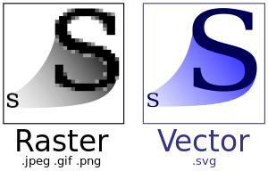

SVGvs位图
SVG是什么?
Scalable Vector Graphics (SVG) is an XML-based vector image format for two-dimensional graphics with support for interactivity and animation. The SVG specification is an open standard developed by the World Wide Web Consortium (W3C) since 1999.wikipedia Scalable Vector Graphics
SVG与Canvas的区别
如何创建SVG文件 1
2
3
4
5
6
7
8
9
10
11
12
13
14
15
16
17
18
<? xml version="1.0" standalone="no" ?>
<!DOCTYPE svg PUBLIC "-//W3C//DTD SVG 1.1//EN"
"http://www.w3.org/Graphics/SVG/1.1/DTD/svg11.dtd">
<svg width ="100%" height ="100%" version ="1.1"
xmlns ="http://www.w3.org/2000/svg" >
<circle cx ="100" cy ="50" r ="40" stroke ="black"
stroke-width ="2" fill ="red" />
</svg >
HTML文件内部:1
2
3
4
5
<div >
<svg xmlns ="http://www.w3.org/2000/svg" >
</svg >
</div >
基本图形绘制 <circle>1
<circle cx="100" cy="100" r="100" fill ="transparent" stroke ="black" stroke -width ="5" stroke -opacity="0.5" ><circle >
2.<rect>1
2
<rect width ="100" height ="100" x ="100" y ="100" rx ="10" ry ="10" > </rect >
3.<line>1
<line x1="50" y1="50" x2="100" y2="100" ></line >
常用标签 <g>容器标签，用来组合元素1
2
3
4
5
6
<g transform="translate(200,200)" stroke ="red" stroke -width ="5" >
<circle r="40" fill ="transparent" ></circle >
<circle r="30" fill ="transparent" ></circle >
<circle r="20" fill ="transparent" ></circle >
<circle r="10" fill ="transparent" ></circle >
</g>
2.<text>文字标签1
2
<text x ="200" y ="200" font-size ="20" text-anchor ="middle" > <text >
3.<image>图片标签1
<image x="200" y="200" width ="100" height ="100" xlink:href="imgs/i.png" ></image >